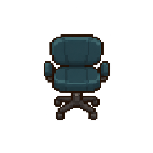
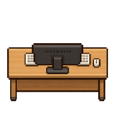

STAR OFFICE / MODULAR WORKSTATION
工位固定，角色独立替换。
桌子、显示器、键盘是一张静态图。12帧只播放角色，不再让家具逐帧变化。
向下 · 正面同轴12帧 / 12fps192 × 192 共享坐标首稿待验收 · 未接入生产
01 / 工位组合播放
正在读取独立素材。
这张办公角色首稿以眨眼和轻微动作为主：爪子未按提示词伸到键盘两侧，打字接触不明显，不能当成已通过的办公模板。工位与角色已分离，不用补画家具来修角色。

后景 / 椅子 · 固定中景 / 角色 · 12帧

前景 / 桌子＋电脑 · 固定